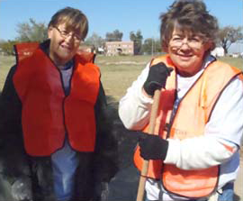
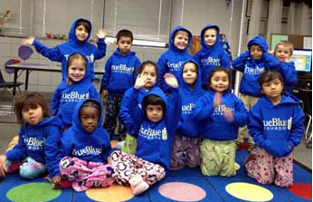
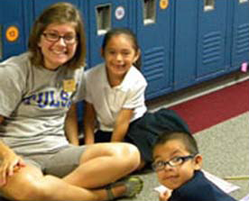

"While our larger community benefits greatly from True Blue Neighbors, the true beneficiaries are TU students who discover their strengths, develop a sense of self and often-times find a passion-driven career as a result of their community service and engagement."
- Steadman Upham, TU PresidentNeighborhood Partnership
A key component of the University of Tulsa's mission is to engage students in the responsibility of citizenship and service in a changing world. In 2009, TU president Steadman Upham created the True Blue Neighbors initiative for students, faculty and staff to help improve the quality of life in the Kendall-Whittier neighborhood, as well as the city of Tulsa.
Earliest contributions focused on Kendall-Whittier Elementary School where True Blue Neighbors coordinated the delivery of volunteers, school supplies and uniforms, academic mentorship, winter clothing, holiday meals, and special community events.
Now managed through the Office of Public Affairs, Research and Economic Development, True Blue Neighbors continues its service and contributions while acting as TU's community engagement clearinghouse. In this expanded role, True Blue Neighbors serves as the gateway for students, faculty and staff to participate with non-profit, philanthropy, government and business partners in community development.
The University gratefully acknowledges the George Kaiser Family Foundation for funding the True Blue Neighbors Student Volunteer Center.
-

-

-
